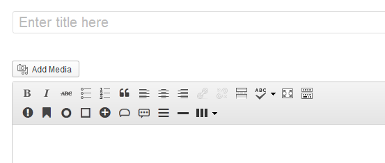

Responsive Wordpress Blog Template
Thank you for purchasing this awesome theme!
First Steps
Let's see what you downloaded
- Documentation - You are currently reading it
- Theme files - The theme files are in nano.zip, the folder "nano" should be placed in the /themes directory of your wordpress installation. Instructions below.
- Plugins - Plugins containing bluwidgets
- Background Videos - Background videos intended for the Header Area
Hey there!
For a great first experience we recommend you do the following:
- Go to Appearance -> Theme Options and press the save button ( or choose your options and then save )
- Go to Appearance -> Customize and press the save button ( if it's greyed out then change anything and then change it back and then you can save )
Wordpress Installation
Before you start messing things up and making things harder for yourself, you really should take a deep breath and read some of these resources, honestly this will help you, we only care for your well being! Here's a great video by WooThemes on how to install Wordpress
Theme installation

Installing
To install the theme use the theme installer in the WordPress administration. Go to Appearance » Themes and click on the tab Install Themes. Choose upload.
Click on Browse..., select the nano.zip theme file and click Install Now.

Activating
After successfully installing the theme click on the Activate button. You can also go to Appearance » Themes and click on Activate were the newly installed theme is located.
Troubleshooting
If you are havng trouble using the default Wordpress installer you can upload the theme via FTP.
- Open nano.zip file and unpack all theme files to a directory on your computer.
- Using FTP, upload this directory to the /wp-content/themes directory of your WordPress installation on your server.
- Go to Appearance » Themes in the WordPress administration and the new theme will appear in the overview of installed themes.
- Click on Activate to activate the newly installed theme.
Are you migrating from another theme?
If you are upgrading your site you might want to consider using a plugin to regenerate all the images for your old posts. Nano uses a specific set of thumbnail sizes and you can easily convert your images with a plugin like this one
Theme Customization
Nano uses the built in Wordpress Customizer, to go there and set up your theme, go to Appearance -> Customize, from there you can edit tons of things in Nano on the fly, you can see the changes appear in the iframe besides the menu.
You can also edit some other options that aren't related to the aesthetic portion of the theme in Appearance -> Theme Options (such as Google Ads & Adspots)
Header Videos
In your downloaded .zip you will find a folder called backround_videos. If you wish to insert a video into the header area, you'll need these videos.
Extract those files from out the zip file and place then on the desktop for example, when you've done so go to your WordPress Admin Panel and into Appearance -> Customize
Open up the Header options. In here you can choose how the header area displays in the front page, posts & pages all differently. Select Video from the dropdown Header Style
Now you'll have to navigate to three different files (.webm, .mp4 and .png) for this to work properly. So choose the video you want to publish, let's say you choose BigParticles, you'll have to navigate to BigParticles.webm in the field marked webm and so on
If you wish to make your own video then you'll have to build these three files for everything to work properly.
Custom Widgets
Our custom widgets are very easy to use, but here is a step-by-step on how to put them, and where they go.
We offer you seven widgetized areas, so the first one is Home Sidebar. That's the sidebar that displays on the front-page (or your default blog). The one below that one is Home Sidebar (Sticky), this is where things get interesting. You can place any widgets in that sidebar and they'll stick to the screen when the user scrolls down. The other widget areas pretty much explain themselves so I won't go into that (same "rules" apply)
There's also a "Home Sidebar", "Page Sidebar", "Post Sidebar" and "Footer Widgets" areas.. these.. well do exactly what you think they do, they are displayed in the defined areas in the theme.
Here's a list of our widgets as of v1.0
- Bluth Author
- Bluth Categories
- Bluth Featured Post
- Bluth Google ADS
- Bluth Google+ Badge
- Bluth HTML
- Bluth ImageBox
- Bluth Likebox
- Bluth Newsletter
- Bluth Social Widget
- Bluth Social Counter
- Bluth Tabs
- Bluth Tweets
BluWidgets
We decided to lay out the groundwork on our new plugin with Nano, BluWidgets now ship with the theme in the .zip file (with all files). Included in the widget is our renowned Instagram widget and the Flickr widget. You can choose to show the default styling on it, or you can use the specialized styling that we thought would fit Nano perfectly.
To install Bluwidgets, follow these steps:
- Open up your Wordpress admin page
- Go to Plugins -> Add New
- Press Upload
- Navigate to the file bluwidgets.zip and press "Install Now"
- Activate the plugin
- You can now go to Appearance -> Widgets and drag the widgets with the prefix "Bluwidgets:" into your sidebar.
Shortcodes
We've included our custom shortcode plug-in called BluthCodes!
If you have another shortcode plug-in watch out that it doesn't conflict with ours, you should be alright though.

Our shortcodes are:- Divider
- Social
- Alert
- Label
- Badge
- Well
- Button
- Blockquote
- Tooltip
- Popover
- Accordion
- Progress Bar
- two_first
- two_second
- two_one_first
- two_one_second
- one_two_first
- one_two_second
- three_first
- three_second
- three_third
- four_first
- four_second
- four_third
- four_fourth
- one_one_two_first
- one_one_two_second
- one_one_two_third
- two_one_one_first
- two_one_one_second
- two_one_one_third
- one_two_one_first
- one_two_one_second
- one_two_one_third
Translations
This theme is translatable. The translation files .po/.mo are located in the inc/lang directory in the Nano theme folder.
To translate the theme you have to use a specific translating program like POEdit
Here's a simple video by AJ Clarke showing how to do just thatAnother way to translate the theme is to get the plugin called CodeStyling Localization
We actually prefer the Localization plugin because it's a more easier and faster way to get things done.
Updating the theme
There are two ways to update your theme to the latest version.
- Wordpress upload method
- FTP method
- Download the latest version of the theme from Themeforest
- Unzip the main file to your computer
- In the unzipped folder there is another zip file called nano.zip, unzip that file as well to a folder of your choice
- Login to your wordpress admin panel and navigate to Appearance » Themes
- First we have to get rid of the old theme and to do that we have to activate another theme
- Click the activate button for some other theme like the wordpress default "Twenty Twelve" theme that comes with wordpress
- After the other theme has activated click the Delete button below the Nano theme
- Now you can install and activate the new theme like normal
- See instructions here
- Download the latest version of the theme from Themeforest
- Unzip the main file to your computer
- In the unzipped folder there is another zip file called nano.zip, unzip that file as well to a folder of your choice
- Open your ftp program like Filezilla and connect to your server. If you don't know your login details your hosting provider can help you get them.
- Then navigate to your themes directory usually something like public_html/wp-content/themes/
- Drag and drop the nano folder you just unzipped from the nano.zip file to the theme folder on your server
- Filezilla will show a dialog warning you that the files you are trying to move to the server already exist, check the "Overwrite" radio button and also check the "Apply to current queue only" checkbox.
- Click OK and the files will start uploading and overwriting the old ones.
- Login to your website admin panel when uploading is finished and make sure the theme is updated by going to Appearance » Themes and checking the version number.